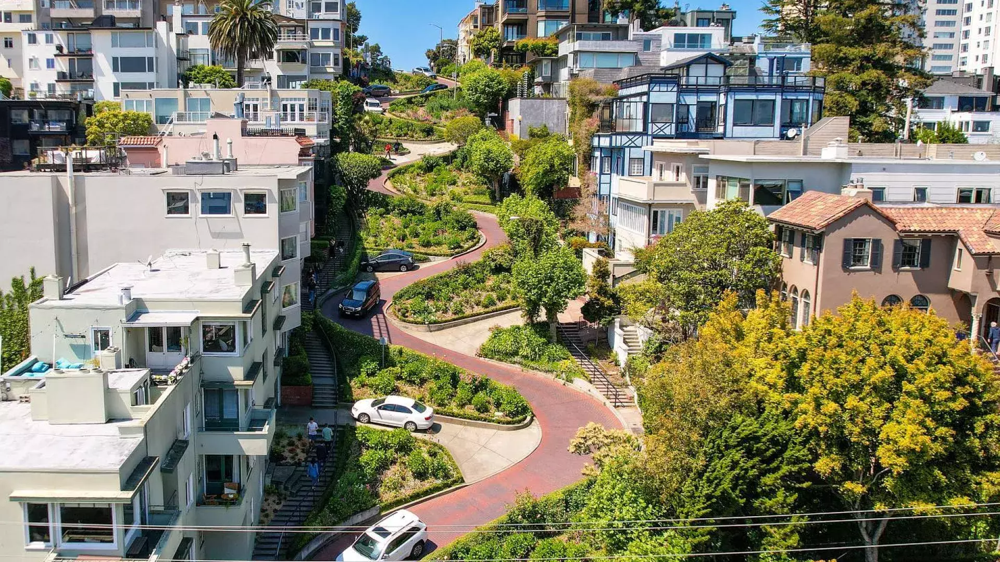

San Francisco, California
Geographical Location: North America
Photo Gallery

Alcatraz Island I visited Alcatraz Prison

Lombard Street

The Painted Ladies

Hill in San Francisco

The Palace of Fine Arts in San Francisco

Yellowstone
Geographical Location: North America
Yellowstone is the first national park in the United States. It covers over 2.2 million acres and provides an opportunity to see wildlife and explore geothermal areas.
Photo Gallery


Qatar And Somalia
Geographical Location: Qatar-Somalia are in West Asia, East Africa
Qatar and Somalia are two countries I visited over the summer. I explored the cities for each one for two months.


Giza, Egypt
Geographical Location: Africa
Giza is located on the western bank of the Nile River and is a historically and culturally significant city in Egypt. It is home to the Great Pyramids and the Sphinx, which are ancient wonders of the world.
Photo Gallery